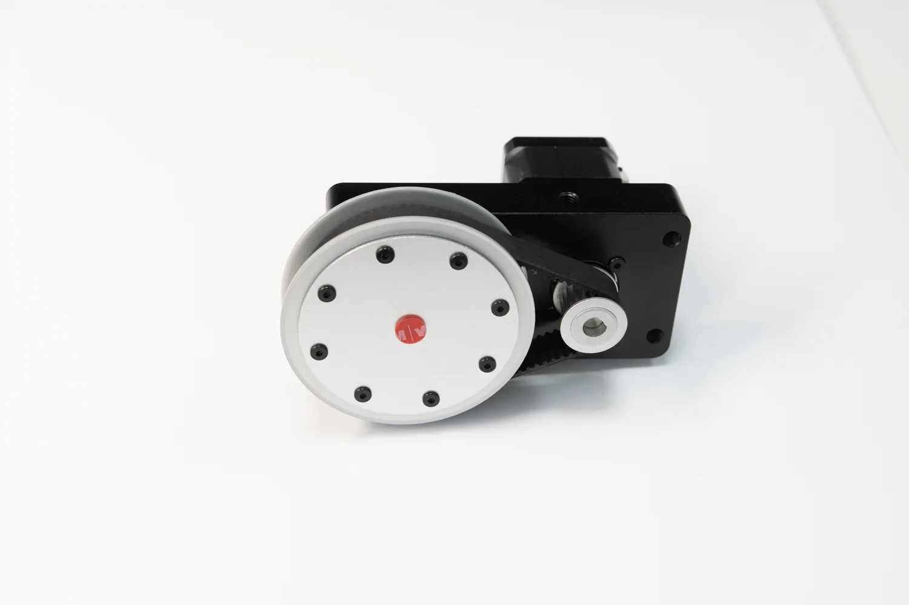
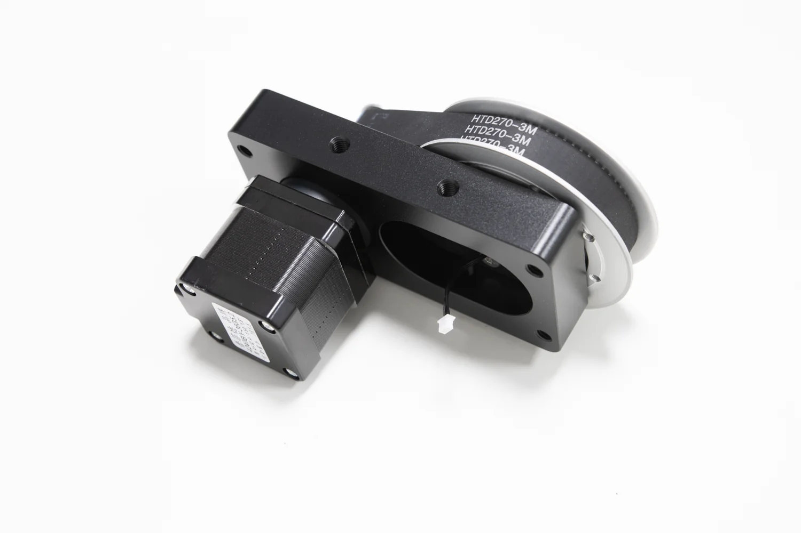
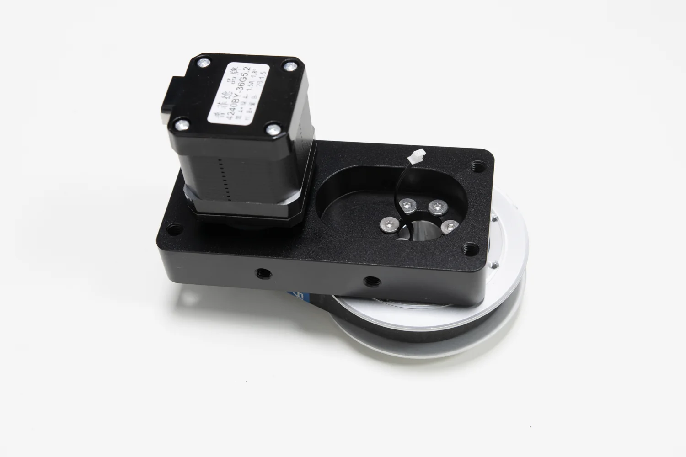
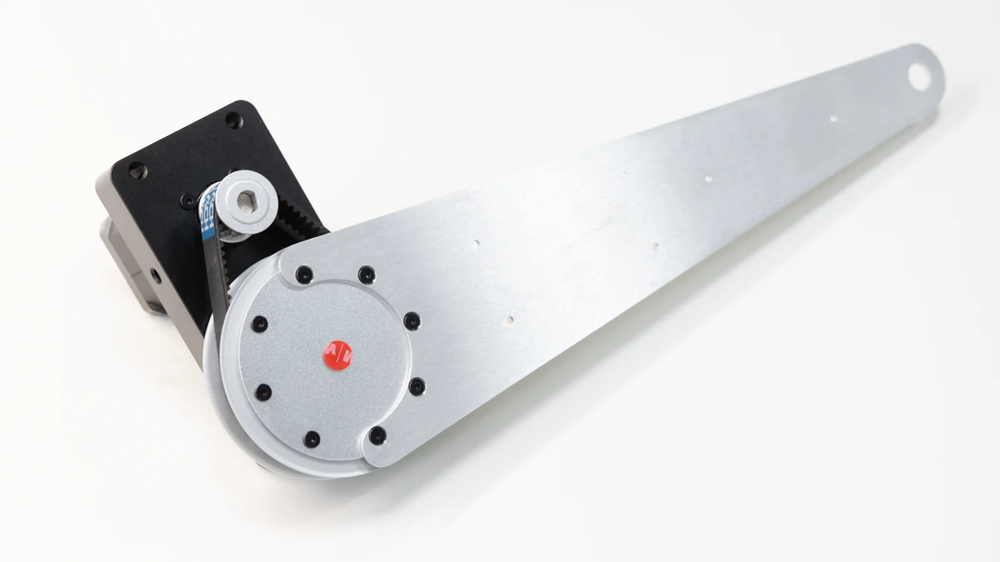
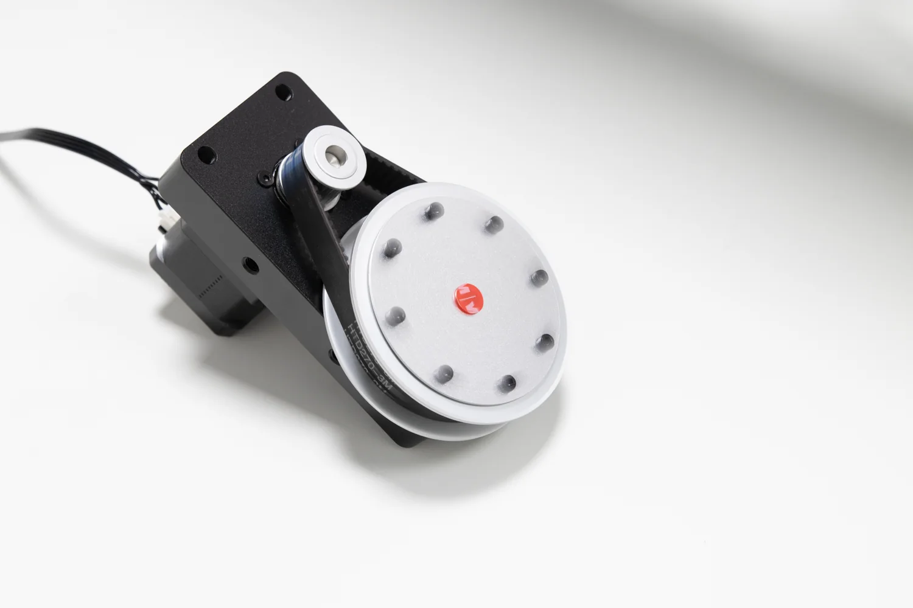
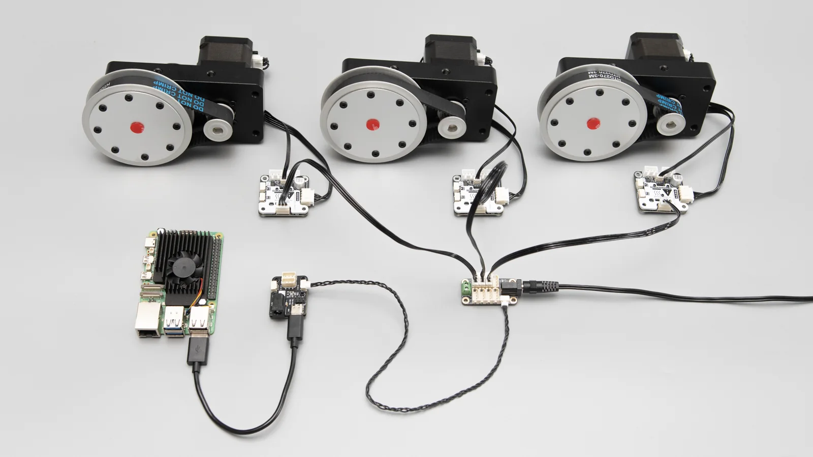
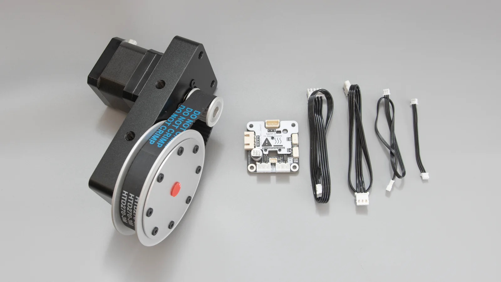

输出端直接反馈
编码器位于输出轮内部，读数同步轮实际输出角度和速度。
用于关节状态检测PRODUCT POSITIONING
DM42-G7220-E02 将机械减速、同步轮安装面、绝对角度反馈和总线驱动组合为一整套关节执行器。它适合需要中低速角度控制、连续转动或多轴同步动作的机器人机构，使用简单，易于集成。
编码器位于输出轮内部，读数同步轮实际输出角度和速度。
用于关节状态检测主体结构上带有M6螺纹孔，便于根据应用需求进行安装和集成。
支持多种安装场景TTL Stepper Driver (A) 提供位置、速度和从动模式，覆盖机器人常用控制方式。
应用层程序更简单驱动板和编码器接入单线 TTL 总线，可与其它灵影总线设备或飞特的总线舵机混合使用。
一根总线，更多功能PRODUCT STRUCTURE
机架主体结构带有M6螺纹孔，便于根据应用需求进行安装和集成。同步轮带有 8 个 M3 安装孔，方便用户根据需要进行扩展。




MECHANICAL INTEGRATION
机架厚度 20mm，方便安装在 20系铝型材上固定使用，通过总线来驱动机器人关节动作，提供完整的教程和示例。
CONTROL & FEEDBACK
驱动器为 TTL Stepper Driver (A)。主控通过总线下发目标位置或速度，驱动板在本地完成步进电机运动控制；从动模式可用于多轴同步机构。
用于关节、摆臂和转台的绝对角度控制，通过编码器可以获取当前机构的绝对角度反馈。
用于连续转动场景，可设置目标速度并结合加减速参数实现柔性启停。
从动设备跟随主设备运动，适合多执行器、镜像机构或同步轴的同步控制。

单圈 0–4095 对应 360°。上电后可读取当前输出位置，校准参数掉电保存。输出端角度可用于关节状态反馈、丢步检测、同步带打滑或机构偏差检测。
查看 TTL Encoder E02 资料
BUS INTEGRATION
PC、树莓派、Jetson 等 SBC 主控可通过 TTL Adapter (A) 的 USB 接口接入；ESP32、STM32 和 Arduino 可通过相应单线 TTL 接口接入。连接多个设备前，需要为每个驱动板和编码器设置不重复的设备 ID。
FD SOFTWARE
FD 软件可用于搜索设备、修改 ID、查看编码器角度、切换控制模式和测试电机。首次调试时先确认供电、线序和设备状态，可以把机械问题、接线问题与程序问题分开排查。


SPECIFICATIONS

PACKAGE CONTENTS
套装以图片和实际发货为准。电源、TTL Adapter、Hub 板及其它总线设备需根据项目配置另行准备。
DOCUMENTATION
DM42-G7220-E02 产品 Wiki 提供结构说明、接线调试与开发资料；驱动板、编码器和总线适配器的独立资料可通过下方入口查看。